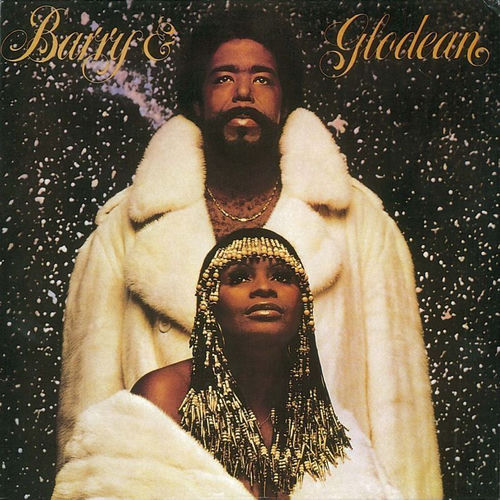

Glodean White
Glodean Beverly White is an American R&B singer, who was married to Barry White. In the 1980s, Glodean White made numerous appearances on Soul Train and the Soul Train Music Awards. She was the lead singer of the singing trio Love Unlimited. She was also known for extremely long fingernails.
Complete Discography & Tracklists (1)